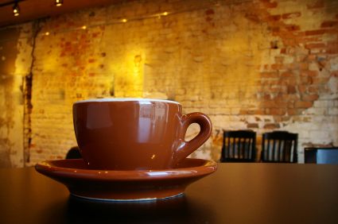

<div id="page-contenta">
  <div class="row">
    <style>
.thisback{
background-color: #b5572a;	
}.insidedi {
   
    margin: 0 auto;
    width: 80%;
}#heredisc {
    color: #fff;
    text-align: left;
}
</style>
    <div class="col-xs-12" style=" overflow:scroll;">
      <div class="widget thisback insidedi">
        <div class="widget-advanced widget-advanced-alt"> 
          <!-- Widget Header -->
          <div class="widget-header text-left"> 
            <!-- For best results use an image with at least 150 pixels in height (with the width relative to how big your widget will be!) - Here I'm using a 1200x150 pixels image --> 
             </div>
          <!-- END Widget Header --> 
          
          <!-- Widget Main -->
          <div class="widget-main" id="heredisc">
            <p style="text-align: justify;"><font size="4" face="arial" color="#FFFFFF">Coffeehouse and coffee shop are related terms for an establishment which primarily serves prepared coffee and other hot beverages.</font></p>
            <div style="text-align: justify;"><font face="arial" color="#FFFFFF"> </font></div>
            <p style="text-align: justify;"><font size="4" face="arial" color="#FFFFFF">A coffeehouse may share some of the same characteristics of a bar or restaurant, but it is different from a cafeteria. As the name suggests, coffeehouses focus on providing coffee and tea as well as light snacks. Many coffee houses in the Middle East, and in West Asian immigrant districts in the Western world, offer shisha (nargile in Turkish and Greek), flavored tobacco smoked through a hookah. Espresso bars are a type of coffeehouse that specialize in serving espresso and espresso-based drinks.</font></p>
          </div>
          <!-- END Widget Main --> 
        </div>
      </div>
      <!-- END Advanced Animated Gallery Widget --> 
    </div>
  </div>
</div>